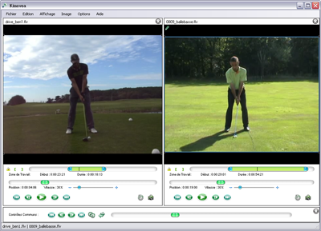

Comparing
This step-by-step will guide you through the following operations :
Opening two videos, Synchronizing two motions on an image, Mirror flipping the image.
1. Opening two videos
Prepare the workspace using menu View > Two Playback/Analysis Screens.
Open successively both videos you would like to compare.

The two videos can be controlled independently from one another using
the controls placed right under each video.
The lower panel holds a new set of controls that will act upon both videos simultaneously.
2. Synchronizing two motions on an image
Move within each video until you get to a common reference event. (For
instance, a jump take off or landing, a racket - ball or foot - ball
impact, etc...)
Click on the synchronize button:
Move within both videos using the common buttons.
Remark : In each video, time markers are now relative to the synchronisation point.
Use the common navigation buttons for frame by frame ( and
and  ) as well as the common navigation bar, to compare key positions that led to the common event. For
example, study the variations in body position or in motion timing.
) as well as the common navigation bar, to compare key positions that led to the common event. For
example, study the variations in body position or in motion timing.
Use the common Play button for a dynamic analysis of differences.
You can unse this function in combination with the slow motion function, in order to improve comparison quality.
If you browse within one video independently using its individual
controls, you can do a "synchronization match" to impose the same
browse on the second video. To that end, use the F9 keyboard shortcut.
3. Mirror flipping the image
The video to be flipped must be in Analysis mode. Click in an empty area
on the screen containing the video to be flipped, in order to make it
active.
The video is active when it displays a blue border.
Use menu Image > Mirror to invert the images.